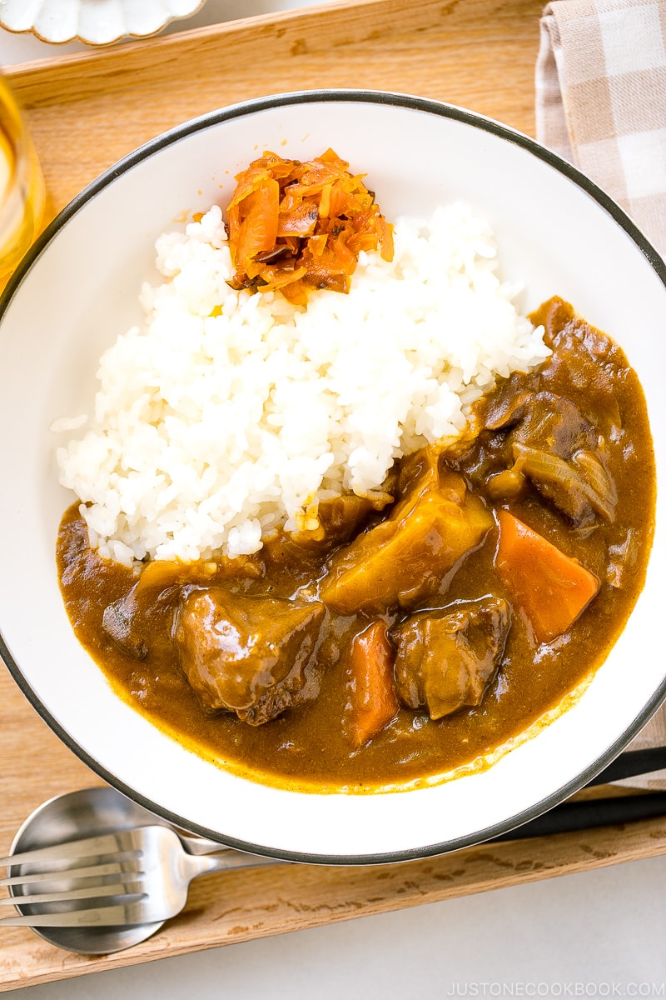

Japanese Curry Rice is an extremely popular dish for all ages in Japan. It is considered one of the country's national dishes along with ramen and gyoza. This recipe is one of the variations of Japanese curry.
This recipe is inspired from Nami's justonecookbook.